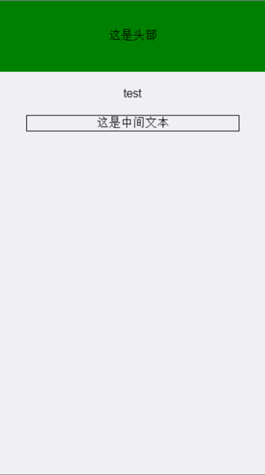

如果没有母版页，那么大量相同布局的页面会有很多相同的代码，那么这就提到了一个概念，叫重用性；
可以将相同布局的代码放在一个单独的文件，里面写一些公共模块，那么在其他页面只需要在指定位置引入他们就可以了
写一个头部，在top.html写入(只写的需要添加的)：
<div style="width: 100%;height: 100px;background: green;text-align: center;line-height: 100px;">
这是头部
</div>在center.html写入：
<div style="width: 80%;margin: 0 auto;text-align: center;border: 1px solid;">
这是中间文本
</div>在index里，需要放置模块的位置放一个容器，然后再ready完成后加载进去：
<script>
/*用jq来写最方便
$(document).ready(function(){
$("#head").load("top.html")
$("#center").load("center.html")
});*/
// 也可以用原生js来实现ready
function ready(fn){
if(document.addEventListener){
//标准浏览器
document.addEventListener('DOMContentLoaded',function(){
document.removeEventListener('DOMContentLoaded',arguments.callee,false); //注销事件，避免反复触发
fn();//执行函数
},false);
}
else if(document.attachEvent){
//IE浏览器
document.attachEvent('onreadystatechange',function(){
if(document.readyState=='complete'){
document.detachEvent('onreadystatechange',arguments.callee);
fn();
}
});
}
}
// 在这里调用ready
ready(function(){
$("#head").load("top.html")
$("#center").load("center.html")
})
</script>
<div id="head"></div>
<div style="text-align: center;padding: 20px;">
test
</div>
<div id="center"></div>
效果图：
